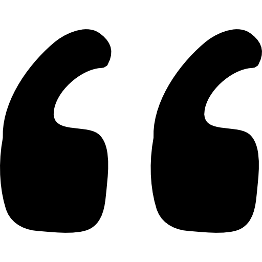

Das Projekt

|
So lautet es im selbstbewussten Nachwort im antiken Gedicht der Metamorphosen. Damit sollte der Schöpfer Publius Ovidius Naso recht behalten. So hat sein monumentales Schaffenswerk hat auch heute noch einen kanonischen Stellenwert und eine enorme Bedeutung für die Kunst. Mein Masterarbeitsprojekt soll daran anknüpfen, und neue Zugänge zu diesem Werk und den in Relation gesetzten Bildwerken schaffen, die sich durch die technischen Möglichkeiten ergeben.
Sie soll dazu dienen, das seit Jahrhunderten vorhandene Wissen in eine neue Form zu bringen, die durch ein iteratives Vorgehen erfahrbar ist und dazu inspiriert neue Fragen an einen alten Bestand zu stellen. Also ein Tool, dass durch neue Ansätze dabei hilft, die Mengen an Text zu strukturieren und Zusammenhänge zu erkennen, die beim linearen Lesen schwer wahrnehmbar sind. Und dadurch dazu anregt, sich näher damit sowie den dazugehörigen Kunstwerken auseinanderzusetzen. So soll es durch die Visualisierung beispielsweise möglich sein, eine Auswahl an Metamorphosen nach verschiedenen Wissenskategorien anzuordnen. Dadurch Fragen nach dem örtlichen Rahmen der Geschichten, der taxonomischen Zugehörigkeit der Verwandelten oder an den kausalen Hintergrund zu stellen. Bzw. diese Kategorien sogar miteinander zu verknüpfen.
Da alle Verwandlungen der Metamorphosen den Rahmen dieser Arbeit übersteigen würde, sind hierbei exemplarisch nur die 60 Verwandlungen der sterblichen Protagonisten innerhalb des Werkes herausgegriffen.
Diese Visualisierung basiert auf einem Projekt, das im Rahmen einer Masterarbeit an der
Friedrich-Alexander-Universität Erlangen-Nürnberg
entstanden ist: Digitale Anwendung zur Vermittlung der Metamorphosen Ovids.
Unter der Betreuung von Prof. Dr.
Peter
Bell
und der kompetenten Beratung von Dirk
Suckow, M.A.
und Philipp Kurth, M.Sc.
Als Inspiration dienten die Projekte:
• VIKUS der FH Potsdam
• Welscher Gast Digital der Universität Heidelberg.

Anmerkungen und Fehlermeldungen bitte an:
Katharina Hefele, katharina.hefele@fau.de